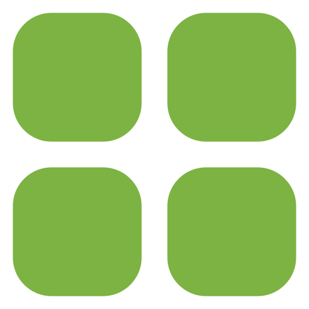

Início

Hectare

Subárea

Histórico
ADM
Histórico
Indicadores
A sua plantação esteve 9 meses com uma umidade do solo ideal
Abril teve a umidade do solo mais baixa registrada (55%)
A umidade do solo média no ano foi 67%
Umidade do solo ao longo do ano
Meses com variações na umidade do solo
Últimos alertas 
02/05/2025 - Hectare 1
15/01/2025 - Hectare 2
09/01/2025 - Hectare 1
20/12/2024 - Hectare 3
15/12/2024 - Hectare 2
01/12/2024 - Hectare 2
Preço da batata inglesa no mercado
R$ 3,99/kg